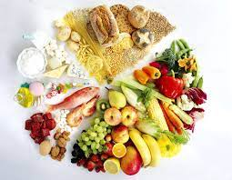
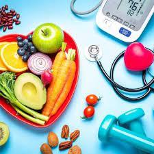

¿Que es?
Generalizando, se puede decir que la alimentación saludable es aquella que proporciona
los nutrientes que el cuerpo necesita para mantener el buen funcionamiento del organismo,
conservar o restablecer la salud, minimizar el riesgo de enfermedades, garantizar la reproducción,
gestación, lactancia, desarrollo y crecimiento adecuado. Para lograrlo, es necesario el consumo
diario de frutas, verduras, cereales integrales, legumbres, leche, carnes, aves y pescado y aceite
vegetal en cantidades adecuadas y variadas. Si lo hacemos así, estamos diciendo que tenemos una
alimentación saludable.
